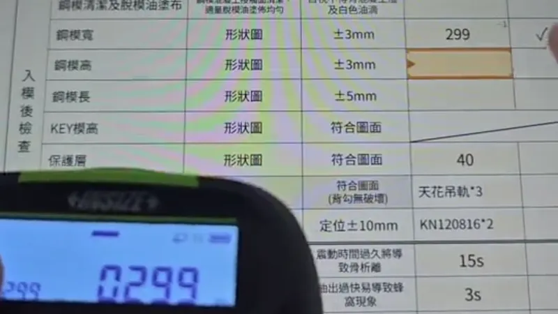
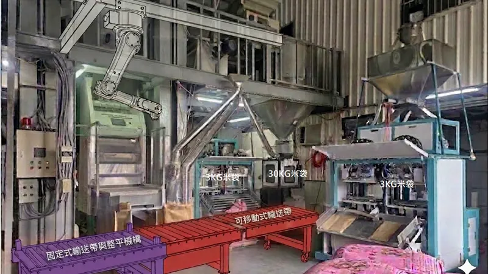
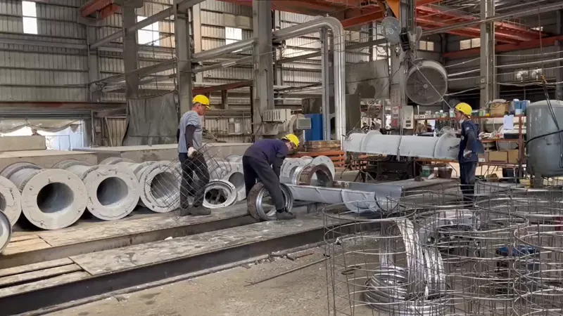
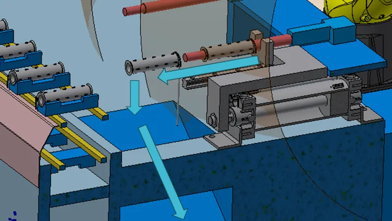
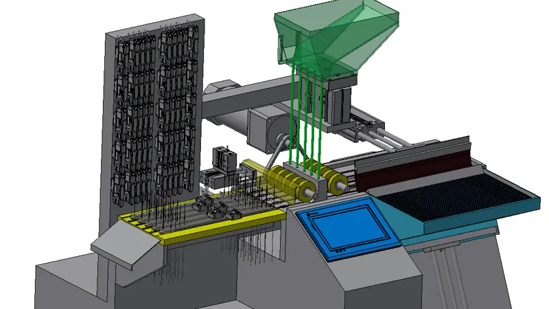
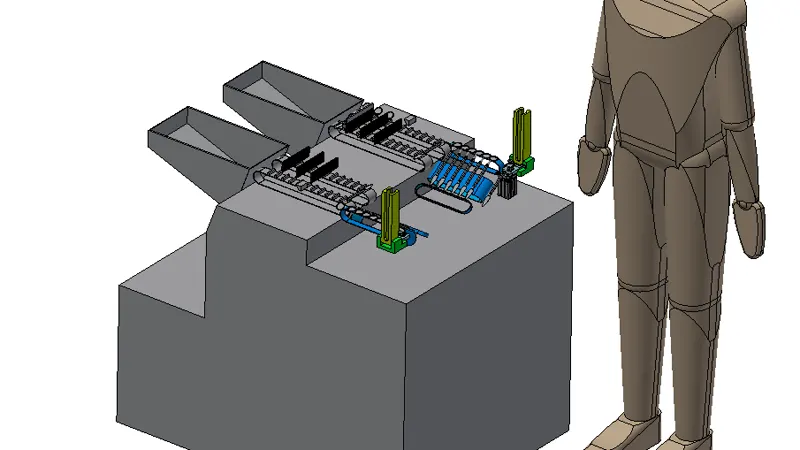
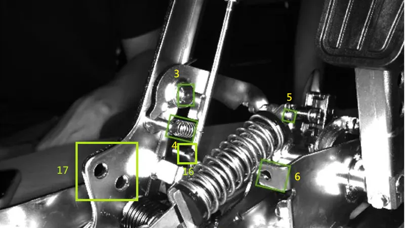
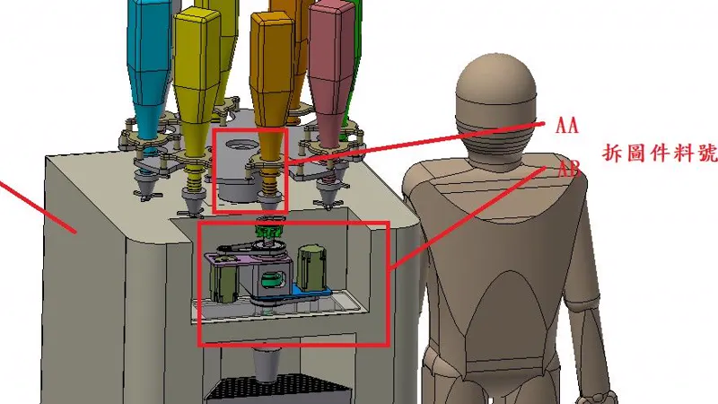
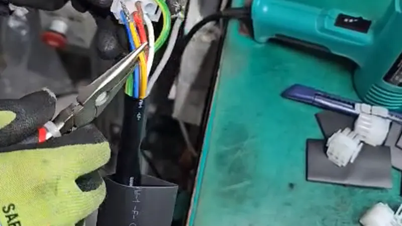
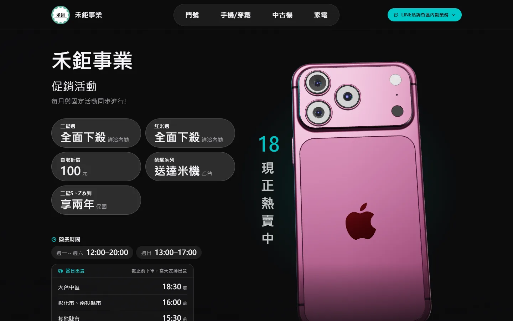

一句話認識我
我是林泓佑，台中的業務工程師，朝陽科技大學資訊工程系。從不動產經紀、三星通訊門市管理，轉入自動化產業擔任設備工程師、點雲視覺軟體工程師，再到業務工程師，熟悉「客戶開發、現場勘查、需求釐清、方案提案、報價簽約、設計協作、試機驗收」完整專案流程。
在自動化公司 4 個月內參與 10 件以上自動化提案，產業橫跨食品、汽車零件、醫療器材、塑膠射出與水泥製管。之後我獨立開發 Pomlo，一套用瀏覽器就能操作機械手臂、相機與夾爪的控制平台，已在實機上完成堆棧與取放測試。
Pomlo：我一手做出來的機械手臂控制平台
從設備驅動、伺服器到操作介面全部自己寫，在實機上跑通堆棧、取放與視覺夾取。
Pomlo
打開瀏覽器，就能操作機械手臂、相機與夾爪。
過去手臂控制、教點、堆棧規劃與視覺定位分散在不同原廠軟體裡。Pomlo 把它們整合成一個網頁平台：現場人員連線設備、用積木排程式、教點位、看即時狀態，都在同一個畫面完成。遇到斷網、暫停或手臂警報，系統會即時偵測並提示，不會整個卡死。
程式執行器、外掛系統
斷線偵測、逾時保護
PLTZ 棧板堆疊
把現場最常見的堆棧需求做成設定頁，教完四角就能自動算出每一箱的位置。
- 四角定位與間距檢查
- 自動排箱，2D 與 3D 疊層檢視
- 支撐檢查，沒堆齊會標示
- 外圈箱子標籤自動朝外
- 放料時第 6 軸自動判斷正反轉
積木式程式編輯
拖拉積木排出手臂流程，移到點位、偏移、夾放、IO、變數，非工程師也看得懂。
點位教導
寸動教點，世界座標與關節角互相換算，法蘭與工具 TCP 可設定。
陣列取放
料盤陣列取放與進度追蹤，切頁回來進度不會遺失。
Eyso 視覺
支援工業相機，樣板比對、手眼校正與視覺夾取，一頁完成定位到抓取。
為現場而做的穩定性
停止與暫停立即生效，全域速度執行中即時調整；上下使能開關、手臂工作區範圍限制、心跳斷線偵測，Gateway 由伺服器自動管理。這些都是在實機上遇到問題、追到根本原因後才補上的。
工作經歷
不動產、通訊門市、設備、軟體到業務工程，每一段都在練同一件事：聽懂需求，交出結果。
自動化軟體開發者（Pomlo 作者）
- 獨立開發 Pomlo：以 C# Gateway、Node.js 與 Vue 打造網頁化機械手臂控制平台，整合協作手臂、工業相機、夾爪與吸盤。
- 堆棧與取放：完成棧板四角定位、自動排箱、標籤朝外、第 6 軸轉向判斷與陣列取放，並在實機上逐項驗證。
- 現場可靠性：追查拔網路線、暫停中斷線導致系統卡死的根本原因，加入心跳斷線偵測、讀取逾時保護與 Gateway 自動管理，單一設備出狀況不再拖垮整個系統。
- 交付與維護：建立版本管理（v1.0 到 v1.3.4，共 10 版）、修改紀錄與一鍵啟動攜帶版，另一台電腦解壓即可使用。
電信業業務
- 客戶端業務舊客維繫：前往客戶端了解業務情況。
- 需求收集與解決方案：獨立完成需求釐清，將客戶的業務問題帶回公司統整，討論解決方案。
- 報表製作：製作業務報表與區域業績提升報表。
- 公司網站製作與維護：30 個工時完成公司網站與價格展示頁，串接雲端硬碟，同事照原本方式更新報價表，網站自動同步，不改變原有作業流程。
業務工程師
- 客戶端業務對接：主動開發米廠、汽車零件廠、醫材與射出廠等客戶，深入產線了解搬運、檢測、噪音、人因等痛點，擔任客戶與內部工程師之間的翻譯橋梁。
- 需求收集與方案提案：獨立完成現場勘查、需求釐清、規格定義、初步報價與專案內容確認書，並於客戶端技術會議簡報。
- 製程瓶頸分析：協同工程師評估機械手臂整合、視覺檢測、專用機設計、噪音與人因改善等方案，產出效益評估表。
- 協力廠商：主動尋找技術廠商導入並達成深度合作，讓現行專案穩定，也帶來新案件。
- 設備驗收與上線支援：負責驗收標準與現場試機協助。
- 內部數位化推動：導入業務部任務追蹤與跨部門溝通工具，並撰寫使用手冊。
設備工程師
- 機械手臂與自動化設備之現場設計、組立與機構維護。
- 軟體維護、企業網頁維護，並協助 SolidWorks 機構繪圖。
店長／門市管理人員
- 負責門市營運、業績達成、客戶諮詢與售後處理，建立穩定的客戶關係與回購率。
- 培養快速判讀客戶需求、提出方案並完成成交的業務直覺。
不動產營業員
- 主動開發案源、帶看、議價與成交，學會在資訊不對等的場域中，用同理心與專業說服客戶。
代表案件實績
自動化公司任職期間（2026/03 - 2026/06）實際參與的提案與導入專案，以及之後為現場開發的系統，點卡片看完整內容。

預鑄小樑自主檢查系統
把紙本自主檢查表搬進瀏覽器，接上數位捲尺：量完按一下，數值直接進到那一格、依允差自動打勾或打紅叉，再跳到下一格。用按鍵間隔分辨捲尺和人手輸入，列印格式與原本紙本相同。

米廠成品包裝與堆疊自動化
針對 30kg、3kg、1.5kg 三種米袋，提出機械手臂堆棧、輸送整平與快拆夾具（夾爪加多吸頭）方案。以 3kg 規格 8 小時 4000 包（約 8.3 包/分）為 KPI，現勘後將「倒吊式」修正為「落地支架式」。

離心製管製程自動化
獨立主導需求訪談並產出簡報與評估報告，涵蓋 自動刮料、拆組模（A/B/C 三方案）、模具清潔、帆布自動啟閉、蒸汽養護控制，整合噪音改善與人因工程，提出 4 到 6 個月交機時程。

埋入射出機手臂上下料
效益評估：4 人變 1 人，回收期 21.9 個月；6 人變 1 人，回收期 13.1 個月。

鋼珠自動壓入機
規格書：317mm 塑膠件加 Ø2.8mm 鋼珠，膠輪壓珠與平行站位，每支 5 秒內，含 NG 自動剔除與全罩式防護。

口腔鏡貼機
主導專案內容確認書，含四大模組，節拍 2.5 秒一支、連續運轉 4 小時驗收，並主持開案會議與 Issue Log。

影像辨識零件安裝驗收
撰寫驗收標準：17 項機構零件、雙機型，把人工目檢轉為 AOI 標準化判定。

自動調酒機
負責產品細節對接，釐清 10 餘項議題，協調以漸層酒款作為雙方一致的驗收基準。

9pin 半自動插入機與汽車零件廠
為射出廠提出機構草圖與規格構想；與汽車零件廠完成 NDA 保密協議，進入實質對接。
專案文件產出
需求訪談與評估報告、設備規格說明書、報價暨專案內容確認書、效益評估表（ROI 試算）、驗收標準書與驗收報告、開案會議問題追蹤紀錄、NDA 保密協議。
產業涵蓋
食品包裝、食品自動化、連接器組裝、塑膠射出、滑軌、醫療器材、水泥製管、環安製程（噪音與人因）。

網站作品：禾鉅事業官網
串接雲端硬碟，不更改原始操作流程，降低導入時的陣痛期。
同事本來就用雲端硬碟上的試算表管理報價。網站直接讀取這些表格，大家照原本的方式更新，網站就自動同步，不用學新系統，也不用等工程師改網頁。
- 門號公版、新機報價、中古機與家電清單即時同步
- 讀不到雲端資料時自動改用備份，網站不會開天窗
- 結構化資料、分享卡片與流量分析，搜尋得到也追得到成效
- 30 個工時完成上線
自傳
我對工程的熱情和對跨領域整合的興趣，是驅使我走上業務工程師這條路最大的動力。我就讀朝陽科技大學資訊工程系，具備 C#、C++ 等程式語言基礎，並擁有丙級軟體應用、硬體裝修技術士證照與勞安小綠卡。
過去的工作經歷讓我累積了跨領域的客戶對接經驗。不動產業務教會我「在資訊不對等的場域用同理心建立信任」，電信通路門市鍛鍊我「在十分鐘內判讀需求並提出方案」。這些看似與工程無關的歷練，正是業務工程師的底層能力：把客戶語言翻譯成技術規格，再把技術方案翻譯回客戶聽得懂的價值。
2024 年正式跨入自動控制設備領域，先從機械手臂與自動化設備的設計、組立與維護開始，再進入點雲視覺軟體撰寫，2026 年成為自動化公司的業務工程師。4 個月內參與 10 餘個案件，獨立完成多份需求訪談報告、規格說明書、效益評估表與專案內容確認書。把客戶現場混亂的痛點拆解成清楚的規格與報價，再看著工程師據此做出實機，是一種跨界翻譯成功的滿足感。
談過那麼多案子之後，我想證明自己不只會說，也能做。於是我獨立開發了 Pomlo：從設備驅動、伺服器到操作介面，一行一行寫出一套讓現場人員用瀏覽器就能操作機械手臂的平台，並在實機上把堆棧、取放、視覺夾取一項項跑通。這讓我面對客戶時，更能精準判斷什麼做得到、要花多少時間、風險在哪裡。
常見問題
Pomlo 是什麼？跟原廠手臂軟體有什麼不同？
Pomlo 是我獨立開發的網頁化機械手臂控制平台。它把手臂、相機、夾爪整合在同一個瀏覽器介面，用積木編寫流程，內建棧板堆疊（PLTZ）、陣列取放與視覺（Eyso）外掛，並針對現場斷網、暫停、警報等狀況做了即時偵測與保護。看完整介紹。
可以為團隊帶來什麼？
從陌生開發、現場勘查、規格與報價、效益評估（ROI）、開案會議到驗收標準的完整能力；也能自己做網站、內部工具與自動化軟體，減少跨部門往返。